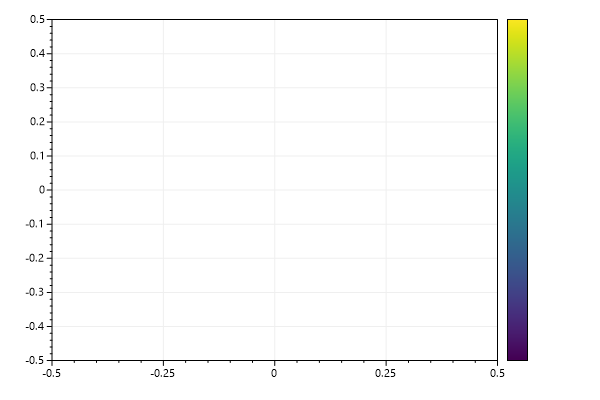
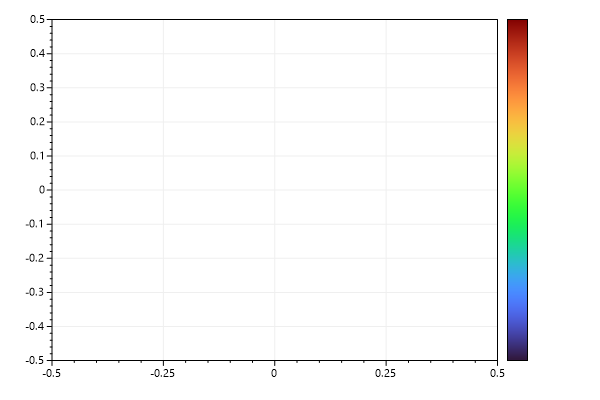
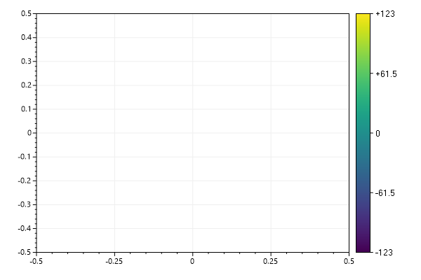

ScottPlot Cookbook: Plottable - Colorbar
⚠️ Documentation is version-specific: This page was generated forScottPlot 4.1.4-beta
Additional documentation and more version-specific cookbooks are on the ScottPlot Website
Colorbar
A colorbar displays a colormap beside the data area. Colorbars are typically added to plots containing heatmaps.var plt = new ScottPlot.Plot(600, 400);
plt.AddColorbar();
plt.SaveFig("colorbar_quickstart.png");

Colorbar for Colormap
By default colorbars use the Viridis colormap, but this behavior can be customized and many colormaps are available.var plt = new ScottPlot.Plot(600, 400);
plt.AddColorbar(Drawing.Colormap.Turbo);
plt.SaveFig("colorbar_colormap.png");

Colorbar Ticks
Tick marks can be added to colorbars. Each tick is described by a position (a fraction of the distance from the bottom to the top) and a string (the tick label).var plt = new ScottPlot.Plot(600, 400);
var cb = plt.AddColorbar();
cb.AddTick(0, "-123");
cb.AddTick(1, "+123");
cb.AddTick(.5, "0");
cb.AddTick(.25, "-61.5");
cb.AddTick(.75, "+61.5");
plt.SaveFig("colorbar_ticks.png");
